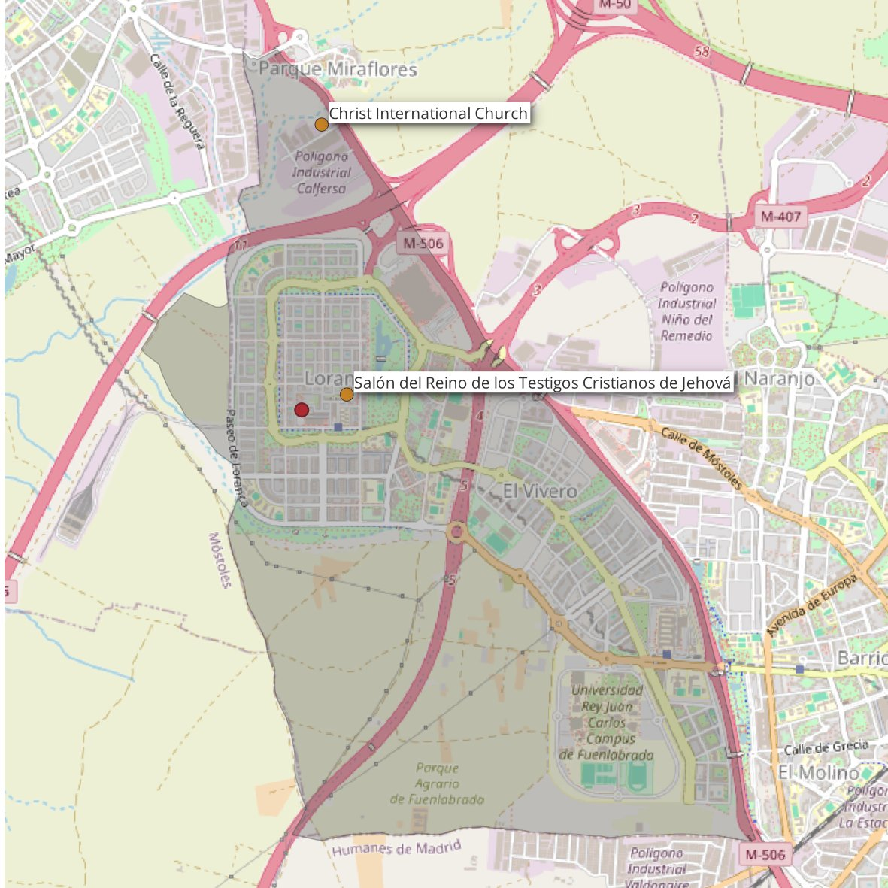
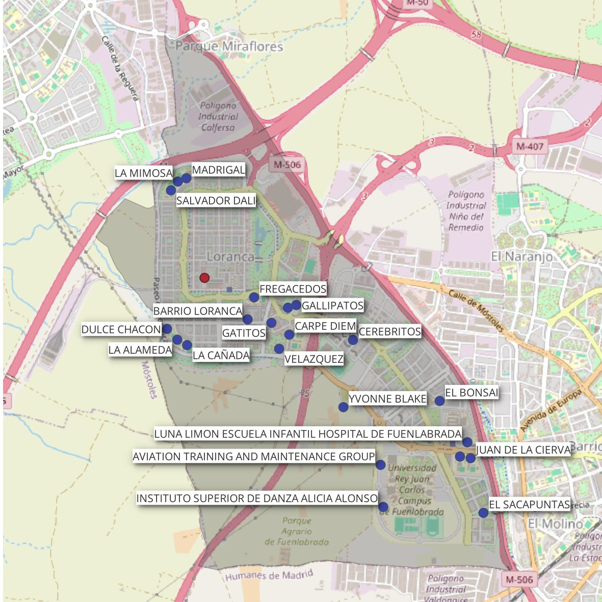

Puntos de interés en el territorio parroquial
Parroquia Sagrada Familia (Fuenlabrada) · Arciprestazgo de Fuenlabrada
Entidades religiosas no católicas

2 entidades religiosas no católicas en el territorio de la parroquia.
Evangélicos (1)
- Christ International ChurchCalle Torneros 3 Polígono Callfersa, Fuenlabrada
Testigos de Jehová (1)
- Salón del Reino de los Testigos Cristianos de JehováCalle de la Danza 2, Fuenlabrada
Fuente: Registro de Entidades Religiosas del Ministerio de la Presidencia, Justicia y Relaciones con las Cortes. Situación en el mapa: dirección geocodificada con CartoCiudad (IGN) o Nominatim (OpenStreetMap).
Centros educativos

22 centros educativos en el territorio de la parroquia (público: 16, privado: 5, privado concertado: 1).
| Centro | Tipo | Titularidad | Domicilio | Web |
|---|---|---|---|---|
| AVIATION TRAINING AND MAINTENANCE GROUP | Centro privado de formación profesional específica | Privado | Camino del Molino, 7, 28942 Fuenlabrada | Página web |
| BARRIO LORANCA | Instituto de educación secundaria | Público | Calle de Federica Montseny, 2, 28942 Fuenlabrada | Página web |
| CARLOS CANO | Colegio de educación infantil y primaria | Público | Avenida de Nuevo Versalles, 2, 28942 Fuenlabrada | Página web |
| CARPE DIEM | Instituto de educación secundaria | Público | Avenida de Nuevo Versalles, 6 bis, 28942 Fuenlabrada | Página web |
| CEREBRITOS | Escuela infantil privada | Privado | Calle de los Claveles, 24, 28942 Fuenlabrada | |
| DULCE CHACON | Colegio de educación infantil y primaria | Público | Calle de Concepción Arenal, 17, 28942 Fuenlabrada | Página web |
| EL BONSAI | Escuela infantil | Público | Calle de Ernest Lluch, s/n, 28942 Fuenlabrada | Página web |
| EL SACAPUNTAS | Escuela infantil | Público | Calle de las Ciencias, 27, 28943 Fuenlabrada | Página web |
| FREGACEDOS | Colegio de educación infantil y primaria | Público | Avenida de Pablo Iglesias, 1, 28942 Fuenlabrada | Página web |
| GALLIPATOS | Escuela infantil | Público | Avenida de Nuevo Versalles, 14, 28942 Fuenlabrada | Página web |
| GATITOS | Escuela infantil privada | Privado | Urbanización Nuevo Versalles, 204, 28942 Fuenlabrada | |
| INSTITUTO SUPERIOR DE DANZA ALICIA ALONSO | Centro autorizado superior de danza | Privado | Camino del Molino, 28943 Fuenlabrada | Página web |
| JIMENA MENENDEZ PIDAL | Instituto de educación secundaria | Público | Camino del Molino, 3, 28942 Fuenlabrada | Página web |
| JUAN DE LA CIERVA | Colegio de educación infantil y primaria | Público | Camino del Molino, 1, 28943 Fuenlabrada | Página web |
| LA ALAMEDA | Escuela infantil | Público | Calle de Concepción Arenal, 15, 28942 Fuenlabrada | Página web |
| LA CAÑADA | Colegio de educación infantil y primaria | Público | Calle de Concepción Arenal, 13, 28942 Fuenlabrada | Página web |
| LA MIMOSA | Escuela infantil | Público | Calle de la Tía Javiera, 4, 28942 Fuenlabrada | Página web |
| LUNA LIMON ESCUELA INFANTIL HOSPITAL DE FUENLABRADA | Escuela infantil privada | Privado | Camino del Molino, 2, 28943 Fuenlabrada | |
| MADRIGAL | Centro privado de educación infantil, primaria y secundaria | Privado concertado | Calle de la Tía Javiera, 2, 28942 Fuenlabrada | Página web |
| SALVADOR DALI | Colegio de educación infantil, primaria y secundaria | Público | Calle de la Tia Javiera, s/n, 28942 Fuenlabrada | Página web |
| VELAZQUEZ | Colegio de educación infantil, primaria y secundaria | Público | Urbanización Nuevo Versalles, 16, 28942 Fuenlabrada | Página web |
| YVONNE BLAKE | Colegio de educación infantil y primaria | Público | Calle Medicina esquina Camino de San Marcos, 28942 Fuenlabrada | Página web |
Fuente: registro de centros educativos de la Comunidad de Madrid. Solo se recogen los centros en situación de alta.